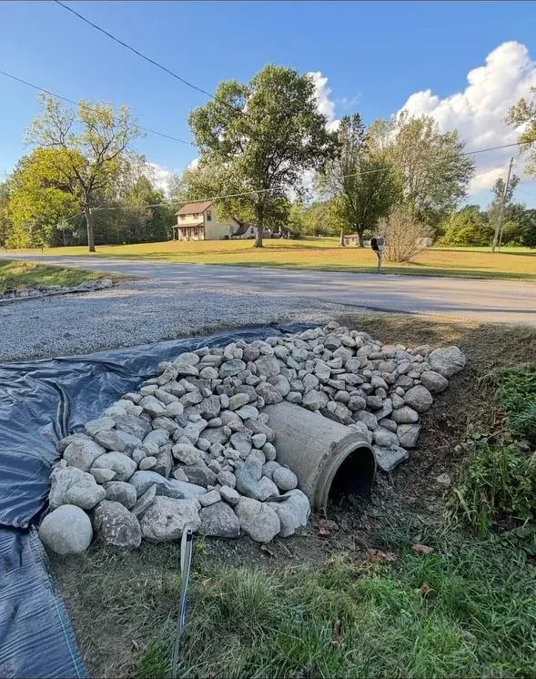
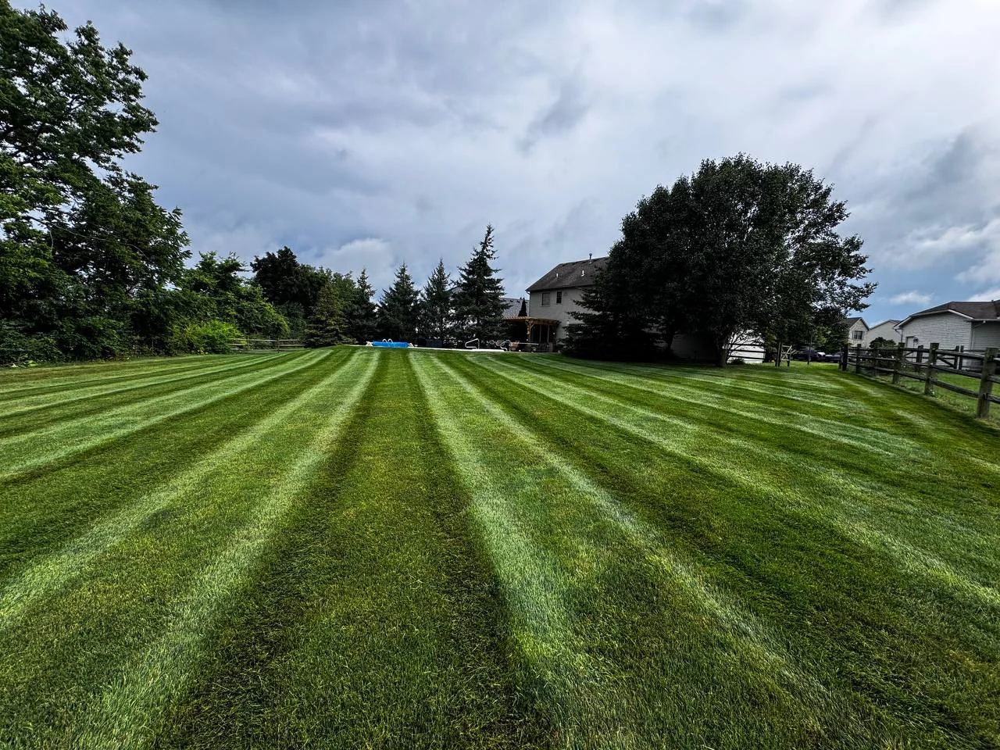

Home / About
About Terramorph
Outdoor work should feel planned, professional, and finished — not patched together.
Terramorph is built for homeowners, businesses, and property owners who want one local crew that can diagnose the property, explain the options, and handle the work with clean follow-through.
 Google Verified
Google Verified
The difference
Terramorph looks at the whole property before recommending the work.
Most outdoor problems are connected. A patio fails when the base or drainage is wrong. Beds look messy when edging, grading, plant selection, and maintenance are disconnected. Lawns suffer when water, shade, soil, and upkeep are not considered together.
That is why Terramorph’s approach starts with the property, not just a single service line. The goal is to make the outside of the home cleaner, more usable, easier to maintain, and better built for Northwest Ohio conditions.
What you get
Professional outdoor work with less guesswork.
The page is not trying to overcomplicate it. Terramorph wins when the customer feels clear about the problem, the scope, the schedule, and the finished result.
Simple process
From messy yard problem to clear next step.
Whether someone needs a patio, drainage fix, lighting, bed refresh, cleanup, maintenance, or snow service, the flow should be easy: reach out, review the property, get a clear scope, then get the work done.
Proof Of Work
Real Terramorph project photos.
Instead of vague promises, the site should keep showing finished outdoor work and give people a clear path to request the same kind of result.





Why homeowners trust Terramorph
Local outdoor work backed by reviews, real project photos, and clear next steps.
Terramorph highlights 200+ five-star reviews, BBB accreditation, real project examples, and a Northwest Ohio service area so homeowners can choose with confidence before requesting an estimate.
★★★★★“Amazing service every time and prompt to all appointments.”
— CJ Miller
★★★★★“Great work at a fair price. They did what they said they were going to do, when they said they would do it. Fast, friendly. Will definitely use them again.”
— Richard Hansen
★★★★★“Ty and his team put hydro mulch down in my front yard and they did an excellent job. The grass is looking awesome! Thanks guys.”
— Derrick Fawley
Fast free estimate
Talk With Terramorph
Use the request form to send Terramorph the basics first, or call directly if the project is urgent.
Best next step
Send the project details, then Terramorph can follow up.
The quote page asks for name, phone, city, address, service type, timeline, and project notes so the crew has enough context before the first call.
- Good for landscaping, patios, drainage, lighting, cleanups, maintenance, and snow service.
- Works on mobile so homeowners can text the request details directly.
- Call 419-873-6801 anytime for urgent property issues or scheduling questions.
Best fit
For property owners who want it handled right.
- Homeowners who want better curb appeal or a more usable backyard
- Properties with standing water, grading, or drainage problems
- Businesses that need dependable landscape maintenance or snow response
- Owners who want one crew to handle related outdoor work together
★★★★★“Amazing service every time and prompt to all appointments.”
— CJ Miller
★★★★★“Great work at a fair price. They did what they said they were going to do, when they said they would do it. Fast, friendly. Will definitely use them again.”
— Richard Hansen
★★★★★“Ty and his team put hydro mulch down in my front yard and they did an excellent job. The grass is looking awesome! Thanks guys.”
— Derrick Fawley